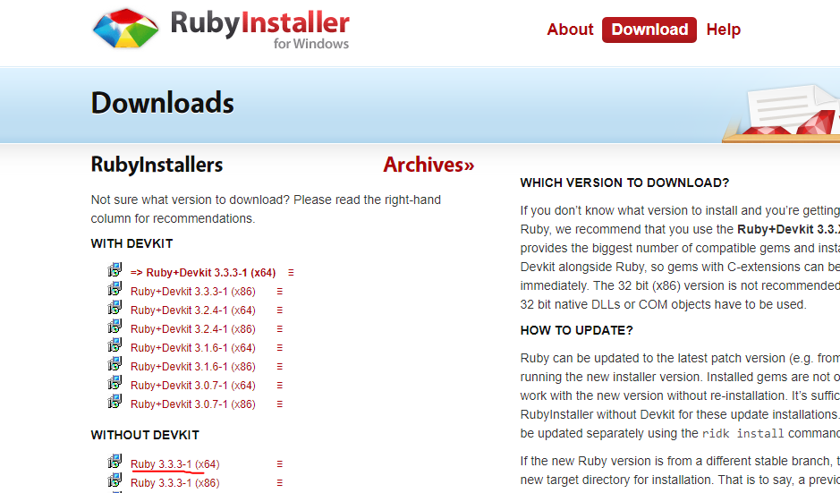
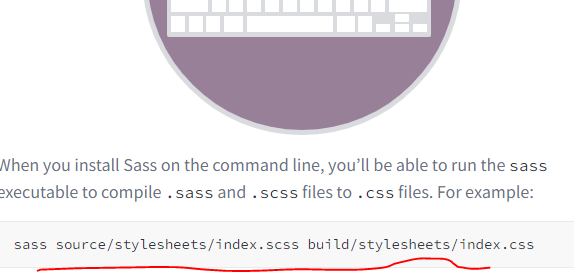
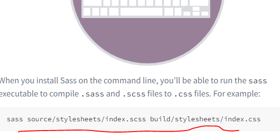

Instalacion de sass
Curso de sass:https://youtu.be/BU7dTgSivYI?si=i4PmZo0hObzRqjZ0
Para instalar sass primero instalamos ruby en el computador

luego instalamos sass en la terminal de ruby con el siguiente comando.
luego instalamos sass en la terminal de ruby con el siguiente comando.
